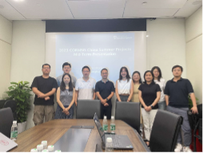

University of Southampton
University Road
Southampton SO17 1BJ


Three of this summer’s CORMSIS industry led dissertation projects were with the National Museum for the Royal Navy, exploring the use of image recognition through machine learning for managing images of historical collections. To help the museum unlock their collections and process data being generated by the HMS Victory restoration project. The projects will be presented at MuseumNext Digital Collections Summit this month.
Dr Jack Gong visited some of our CORMSIS industry partners based in China over the summer.Exploring new partnerships with businesses such as JD.com (one of the largest e-commerce businesses in China) and visiting our students on site at their project hosts.
Prof. Christine Currie has two EPSRC funded research projects starting this autumn: ADROIT, focused on modelling and pricing for demand responsive transport joint with University of Leeds and Kings College London; and a project modelling car share and short-term rentals with Kings College London that will start in September.
Dr Patrick Beullens has successfully acquired funds from Innovate UK for a project on the logistics and supply chain aspects of liquid hydrogen storage and dispensing, in collaboration with ZeroAvia, Lux Industries, and Wessington Cryogenics. The project will start in October 2023 and will run for 18 months. Patrick will also liaise with the cryogenic research conducted elsewhere in the University, and in particular work with Prof Richardson from Aerodynamics and flight mechanics of the University.
Dr. Bismark Singh was awarded a pump-priming funding for research on waste recycling behavior by our university.
University of Southampton
University Road
Southampton SO17 1BJ